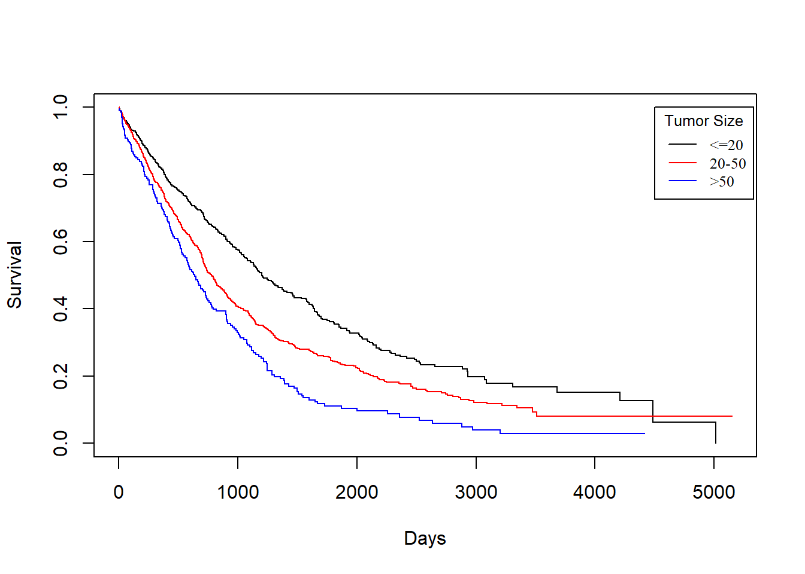

3.3 Kaplan-Miere estimator on different variables in rotterdam
There are 16 variables in the rotterdam dataset. Of course we could have fit each variable with a KM estimator, but it would be meaningless to do them all. We will stick to the Diagnostics and Treatment we mentioned in Chapter 2 and fit size, Nodes_level(we are not using nodes because a Kaplan-Miere estimator does not work well with quantitative variables), grade and Treatment each with KM estimators with respect to dtime, rtime, and drecurtime to grasp the survival time within each categories of the variables.
3.3.1 size vs. Survival Times
size vs. dtime
KM_None_Death <- survfit(Surv(dtime, death) ~ size, data = rotterdam)
plot(KM_None_Death, conf.type = "plain", col = c("black","red","blue"), xlab="Days", ylab="Survival")
legend(6000, 1, legend=c("<=20", "20-50", ">50"),
col=c("black", "red", "blue"), lty=1, cex=0.8,
title="Tumor Size", text.font=6)
size vs. rtime
KM_None_Recur <- survfit(Surv(rtime, recur) ~ size, data = rotterdam)
plot(KM_None_Recur, conf.type = "plain", col = c("black","red","blue"), xlab="Days", ylab="Survival")
legend(6000, 1, legend=c("<=20", "20-50", ">50"),
col=c("black", "red", "blue"), lty=1, cex=0.8,
title="Tumor Size", text.font=6)
In general, patients with smaller tumor at diagnosis enjoys longer survival for both death and recurrence.
KM_None_drecur <- survfit(Surv(drecurtime, death) ~ size, data = rotterdam_recur)
plot(KM_None_drecur, conf.type = "plain", col = c("black","red","blue"), xlab="Days", ylab="Survival")
legend(4500, 1, legend=c("<=20", "20-50", ">50"),
col=c("black", "red", "blue"), lty=1, cex=0.8,
title="Tumor Size", text.font=6)
The trend is still the same as patients with smaller tumor size enjoy longer survival of death after recurrence, but the survival time now decreases much faster for all groups.
3.3.2 Nodes_level vs. Survival Times
Nodes_level vs. dtime
KM_None_Death <- survfit(Surv(dtime, death) ~ Nodes_level, data = rotterdam)
plot(KM_None_Death, conf.type = "plain", col = c("black","red","blue","orange"), xlab="Days", ylab="Survival")
legend(6000, 1, legend=c("N0", "N1","N2", "N3"),
col=c("black", "red", "blue", "orange"), lty=1, cex=0.8,
title="Nodes_level", text.font=6)
Nodes_level vs. rtime
KM_None_Recur <- survfit(Surv(rtime, recur) ~ Nodes_level, data = rotterdam)
plot(KM_None_Recur, conf.type = "plain", col = c("black","red","blue","orange"), xlab="Days", ylab="Survival")
legend(6000, 1, legend=c("N0", "N1","N2", "N3"),
col=c("black", "red", "blue", "orange"), lty=1, cex=0.8,
title="Nodes_level", text.font=6)
In general, patients with less nodes tested positive will enjoy longer survival for both death and recurrence.
Nodes_level vs. drecurtime
KM_None_drecur <- survfit(Surv(drecurtime, death) ~ Nodes_level, data = rotterdam_recur)
plot(KM_None_drecur, conf.type = "plain", col = c("black","red","blue","orange"), xlab="Days", ylab="Survival")
legend(4500, 1, legend=c("N0", "N1","N2", "N3"),
col=c("black", "red", "blue", "orange"), lty=1, cex=0.8,
title="Nodes_level", text.font=6)
Similarly, the trend is still the same as patients with fewer nodes tested positive enjoy longer survival of death after recurrence, but the survival time now decreases much faster for all groups, and the difference is small in groups N1, N2 and N3.
3.3.3 grade vs. Survival Times
grade vs. dtime
KM_None_Death <- survfit(Surv(dtime, death) ~ grade, data = rotterdam)
plot(KM_None_Death, conf.type = "plain", col = c("black","red"), xlab="Days", ylab="Survival")
legend(6000, 1, legend=c("2", "3"),
col=c("black", "red"), lty=1, cex=0.8,
title="grade", text.font=6)
grade vs. rtime
KM_None_Recur <- survfit(Surv(rtime, recur) ~ grade, data = rotterdam)
plot(KM_None_Recur, conf.type = "plain", col = c("black","red"), xlab="Days", ylab="Survival")
legend(6000, 1, legend=c("2", "3"),
col=c("black", "red"), lty=1, cex=0.8,
title="Nodes_level", text.font=6)
grade vs. drecurtime
KM_None_drecur <- survfit(Surv(drecurtime, death) ~ grade, data = rotterdam_recur)
plot(KM_None_drecur, conf.type = "plain", col = c("black","red"), xlab="Days", ylab="Survival")
legend(4500, 1, legend=c("2", "3"),
col=c("black", "red"), lty=1, cex=0.8,
title="Nodes_level", text.font=6)
Similarly, we find that patients with grade 2 breast cancer show clear distinction in both the survival of death and recurrence. However, such distinct becomes less obvious for the survival of death after recurrence has occurred.
3.3.4 Treatment vs. Survival Times
Treatment vs. dtime
KM_Treatment_Death <- survfit(Surv(dtime, death) ~ Treatment, data = rotterdam)
plot(KM_Treatment_Death, conf.int = FALSE, col = c("black", "red", "blue", "orange"), xlab="Days", ylab="Survival")
legend(1, 0.4, legend=c("Both", "Chemo","Hormon", "NaN/Other Treatment"),
col=c("black", "red", "blue", "orange"), lty=1, cex=0.8,
title="Treatment Group", text.font=6)
Treatment vs. rtime
KM_Treatment_Recur <- survfit(Surv(rtime, recur) ~ Treatment, data = rotterdam)
plot(KM_Treatment_Recur, conf.int = FALSE, col = c("black", "red", "blue", "orange"), xlab="Days", ylab="Survival")
legend(1, 0.4, legend=c("Both", "Chemo","Hormon", "NaN/Other Treatment"),
col=c("black", "red", "blue", "orange"), lty=1, cex=0.8,
title="Treatment Group", text.font=6)
As we have discussed in Chapter 2, we know that generally chemotherapy is used on patients with age lower than 50 years old and hormontherapy is used on patients with age higher than 50 years old. Based on the difference of treatment, we could see that chemotherapy has a better effect than hormontherapy with respect to death time and a smaller yet still better effect regarding the recurrence time.
Treatment vs. drecurtime
KM_Treatment_drecur <- survfit(Surv(drecurtime, death) ~ Treatment, data = rotterdam_recur)
plot(KM_Treatment_drecur, conf.int = FALSE, col = c("black", "red", "blue", "orange"), xlab="Days", ylab="Survival")
legend(3700, 1, legend=c("Both", "Chemo","Hormon", "NaN/Other Treatment"),
col=c("black", "red", "blue", "orange"), lty=1, cex=0.8,
title="Treatment Group", text.font=6)
However, sadly enough, from the above plot we could see that no matter what treatment a patient use, it does not make a difference for the death survival time after cancer cells have recurred. This matches our conclusion from the visualization in Chapter 2.